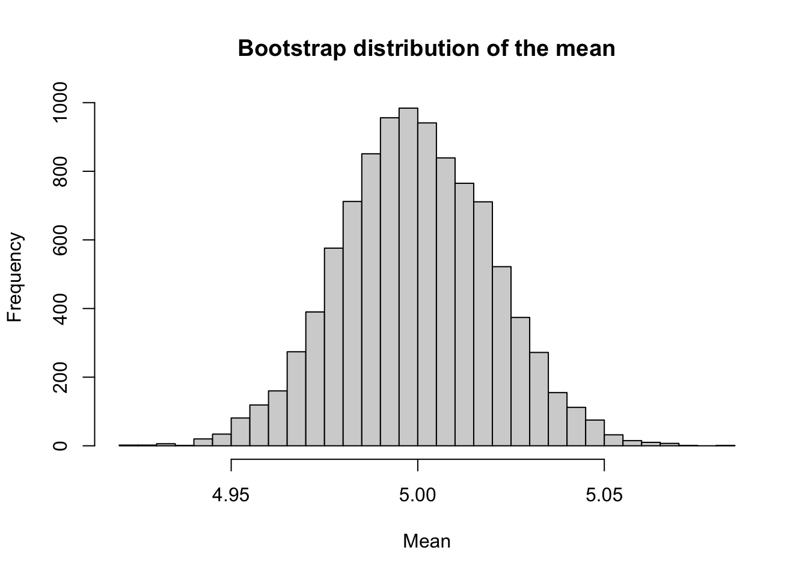
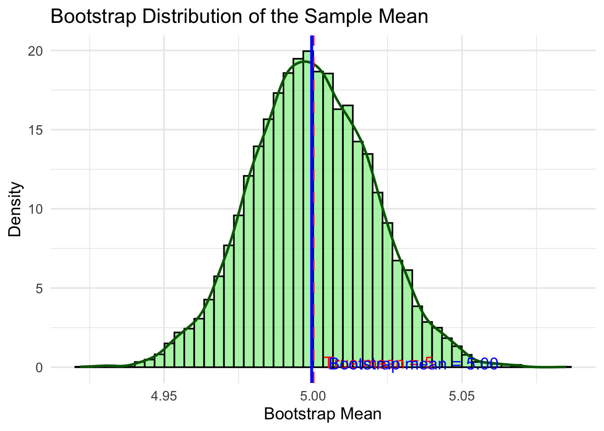

This chapter covers resampling methods including the jackknife and bootstrap techniques.
6.2 Resampling methods
Resampling methods is a way to use the observed data to generate hypothetical samples. It treats an observed sample as a finite population, and random samples are generated/resampled from it to estimate population characteristics and make inferences about the sampled population. It is useful when:
Do not know the underlying distribution of a population
The formula may be difficult to be calculated.
Some commonly used resampling methods include:
Bootstrap: Bootstrap methods are often used when the distribution of the target population is not specified; the sample is the only information available.
Jackknife: The jackknife is a resampling technique used to estimate the bias and variance of a statistic. It is like a leave-one-out (LOO) cross-validation.
Cross-validation: Cross-validation is a model validation technique for assessing how the results of a statistical analysis will generalize to an independent data set. It is mainly used in settings where the goal is prediction, and one wants to estimate how accurately a predictive model will perform in practice.
Permutation tests: Permutation tests are a type of non-parametric statistical test that involves rearranging the data points to test a hypothesis. They are used to determine whether the observed effect is statistically significant by comparing it to the distribution of effects obtained through random permutations of the data.
6.3 Estimators
6.3.1 Bias-Variance Tradeoff
In statistics, the bias-variance tradeoff is the property of a model that the variance of the parameter estimated across samples can be reduced by increasing the bias in the estimated parameters. If we look at the Mean square error (MSE) of an estimator \(\hat \theta\) for a parameter \(\theta\):
Suppose we have a parameter \(\theta\) and an estimator \(\hat \theta\). The mean square error (MSE) of the estimator is defined as \[\mathrm{MSE}_{\theta}(\hat \theta)=\mathbb E[(\hat \theta-\theta )^2 ]= \mathbb{V}ar(\hat \theta) + [\mathbb b(\hat \theta)]^2,\] where \(\mathbb b\) is the bias of the estimator.
NoteDerivation
We start with the definition of the mean squared error (MSE): \[
\mathrm{MSE}_\theta(\hat \theta)
= \mathbb E\big[(\hat \theta- \theta)^2\big].
\]
Questions: Why do we care about the bias? Can we always find an unbiased estimator? What does it mean?
For most of the course, we focus on the unbiased estimator. This may often be obtained from using the LLN. Then, such as in the MC Chapter, we can compare the (relative) efficiency between the estimators, and discuss about the variance reduction.
6.4 Bootstrap
The bootstrap is a resampling method that allows estimation of the sampling distribution of almost any statistic using random sampling methods.
Parametric bootstrap
Nonparametric bootstrap: In nonparametric bootstrap, the distribution is not specified.
set.seed(333)n <-1E4B <-1E4x <-rnorm(n, mean =5, sd =2) #original sampleboot_means <- pbapply::pbsapply(1:B, function(i){ indices <-sample(1:n, size = n, replace =TRUE) #resample boot.sample <- x[indices]mean(boot.sample)}) mean(boot_means)
[1] 4.999525
hist(boot_means, breaks =50, main ="Bootstrap distribution of the mean", xlab ="Mean")

# Compute statisticstrue_mean <-5boot_mean <-mean(boot_means)df <-tibble(x = boot_means)# Plotggplot(df, aes(x = x)) +geom_histogram(aes(y = ..density..), bins =50, fill ="lightgreen", color ="black", alpha =0.7) +geom_density(color ="darkgreen", size =1) +geom_vline(xintercept = true_mean, color ="red", linetype ="dashed", size =1.1) +geom_vline(xintercept = boot_mean, color ="blue", linetype ="solid", size =1.1) +labs(title ="Bootstrap Distribution of the Sample Mean",x ="Bootstrap Mean",y ="Density" ) +annotate("text", x = true_mean, y =0.3, label ="True mean = 5", color ="red", hjust =-0.1) +annotate("text", x = boot_mean, y =0.25, label =sprintf("Bootstrap mean = %.2f", boot_mean),color ="blue", hjust =-0.1) +theme_minimal(base_size =14)
Warning: Using `size` aesthetic for lines was deprecated in ggplot2 3.4.0.
ℹ Please use `linewidth` instead.
Warning: The dot-dot notation (`..density..`) was deprecated in ggplot2 3.4.0.
ℹ Please use `after_stat(density)` instead.

The bootstrap is a general tool for assessing statistical accuracy. First we describe the bootstrap in general, and then show how it can be used to estimate extra-sample prediction error. As with cross-validation, the boot- strap seeks to estimate the conditional error ErrT , but typically estimates well only the expected prediction error Err.
The distribution of the finite population represented by the sample can be regarded as a pseudo-population with similar characteristics as the true population. By repeatedly generating random samples from this pseudo-population (resampling), the sampling distribution of a statistic can be estimated. Properties of an estimator such as bias or standard error can be estimated by resampling.
Bootstrap estimates of a sampling distribution are analogous to the idea of density estimation. We construct a histogram of a sample to obtain an estimate of the shape of the density function. The histogram is not the density, but in a nonparametric problem, can be viewed as a reasonable estimate of the density. We have methods to generate random samples from completely specified densities; bootstrap generates random samples from the empirical distribution of the sample.
The term bootstrap can refer to nonparametric bootstrap or parametric bootstrap. Monte Carlo methods that involve sampling from a fully specified probability distribution, such as methods of Chapter 7 are sometimes called parametric bootstrap. Nonparametric bootstrap is the subject of this chapter. In nonparametric bootstrap, the distribution is not specified.
To generate a bootstrap random sample by resampling \(x\), generate n random integers \(\{i_1,\dots, i_n\}\) uniformly distributed on \(\{1,\dots , n\}\) and select the bootstrap sample \(x^∗ = (x_{i_1} ,\dots, x_{i_n} )\). Suppose \(\theta\) is the parameter of interest (\(\theta\) could be a vector), and \(\hat \theta\) is an estimator of \(\theta\). Then the bootstrap estimate of the distribution of \(\hat \theta\) is obtained as follows.
For each bootstrap replicate, indexed \(b = 1, \dots, B\):
Generate sample \(x^{\ast (b)} = x_1^\ast,\dots,x_n^\ast\) by sampling with replacement from the observed sample \(x_1,\dots,x_n\).
Compute the \(b\)th replicate \(\hat \theta^{(b)}\) from the \(b\)th bootstrap sample.
The bootstrap estimate of \(F_{\hat \theta}(\cdot)\) is the empirical distribution of the replicates \(\hat \theta^{(1)},\dots ,\hat \theta^{(B)}\).
6.5 Jackknife
The jackknife is a resampling technique used to estimate the bias and variance of a statistic.
Jackknife is like a leave-one-out cross-validation. Let \(\mathbf{x}= (x_1,\dots,x_n)\) be an observed random sample, and denote the \(i\)th jackknife sample by \(\mathbf{x}_{-i} = (x_1,\dots,x_{i-1},x_{i+1},\dots,x_n)\), that is, a subset of \(\mathbf{x}\).
For the parameter of interest \(\theta\), if the statistics is \(T(\mathbf{x})=:\hat \theta\) is computed on the full
6.5.1 When does jackknife not work?
Jackknife does not work when the function \(T(\cdot)\) is not a smooth functional!
6.6 Jackknife
The jackknife is another resampling method, proposed by Quenouille [225, 224] for estimating bias, and by Tukey [289] for estimating standard error, a few decades earlier than the bootstrap. Efron [88] is a good introduction to the jackknife.
Jackknife is a special kind of Cross-validation where we leave-one-out (LOO) the observation, and calculate the quantities on the remaining data. To fix the idea, let \(x=(x_1,\dots,x_n)\) be the observed data of samele size \(n\). The \(i\)th jackknife sample is defined as \(x_{-i}=(x_1,\dots,x_{i-1},x_{i+1},\dots,x_n)\), that is, the sample with the \(i\)th observation removed. Let \(\hat \theta=T(x)\) be the estimator of the parameter of interest \(\theta\). The \(i\)th jackknife replicate is defined as \(\hat \theta_{-i}=T(x_{-i})\), that is, the estimate computed from the \(i\)th jackknife sample. The jackknife estimate of bias is defined as
6.6.1 Jackknife Estimate of Bias
If ˆθ is a smooth (plug-in) statistic, then \(\hat \theta_{(\cdot)} = t\{F_{n−1}(x(i))\}\), and the jackknife estimate of bias is \[
\hat{b}_{jack} = (n − 1)(\hat \theta_{(\cdot)} − \hat \theta),
\] where \(\overline{\hat \theta_{(\cdot)}}=\frac{1}{n} \sum_{i=1}^n \hat \theta_{(i)}\) is the average of the estimate from LOO samples, and \(\hat \theta=\hat \theta(x)\) is the estimate from the original observed sample.
Compute the jackknife estimate of bias for the patch data in the bootstrap package.